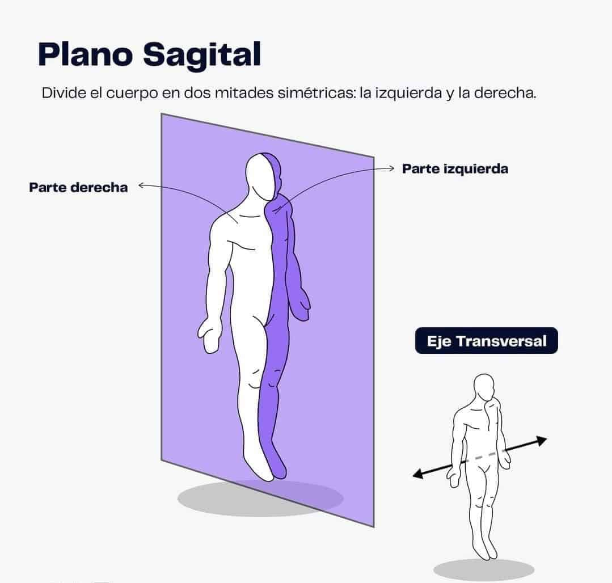
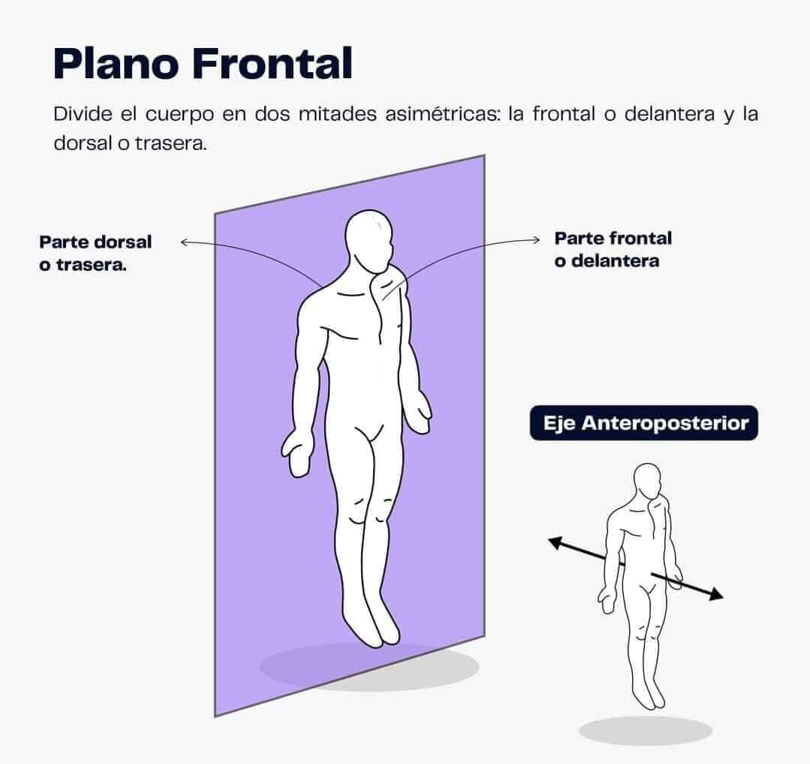
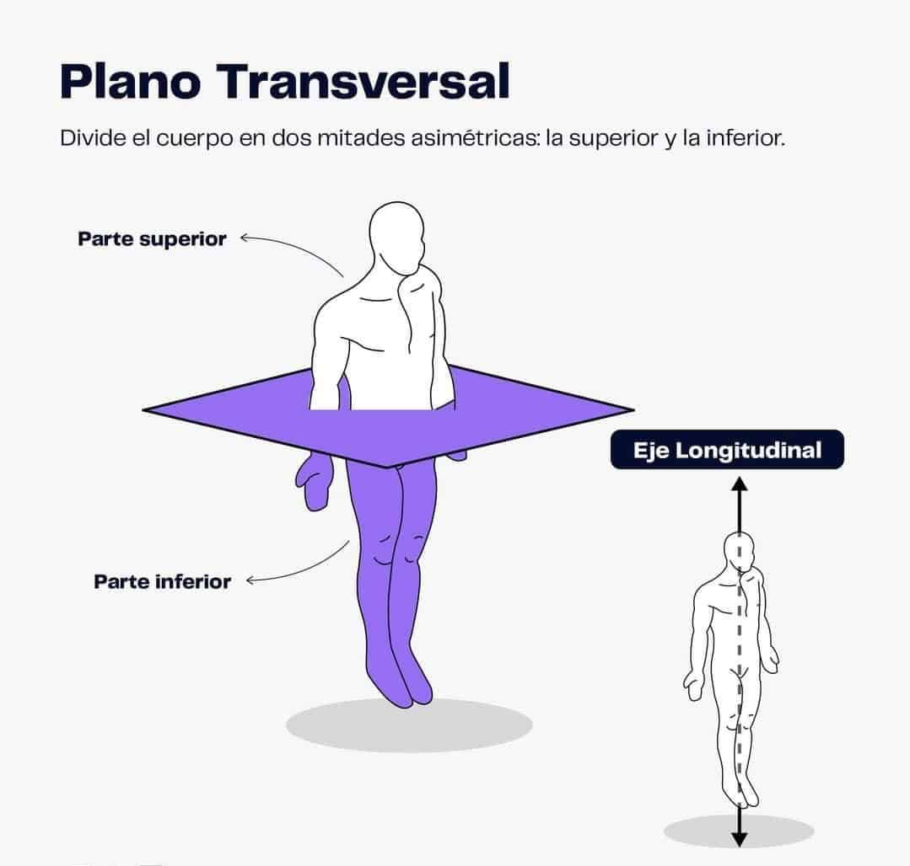
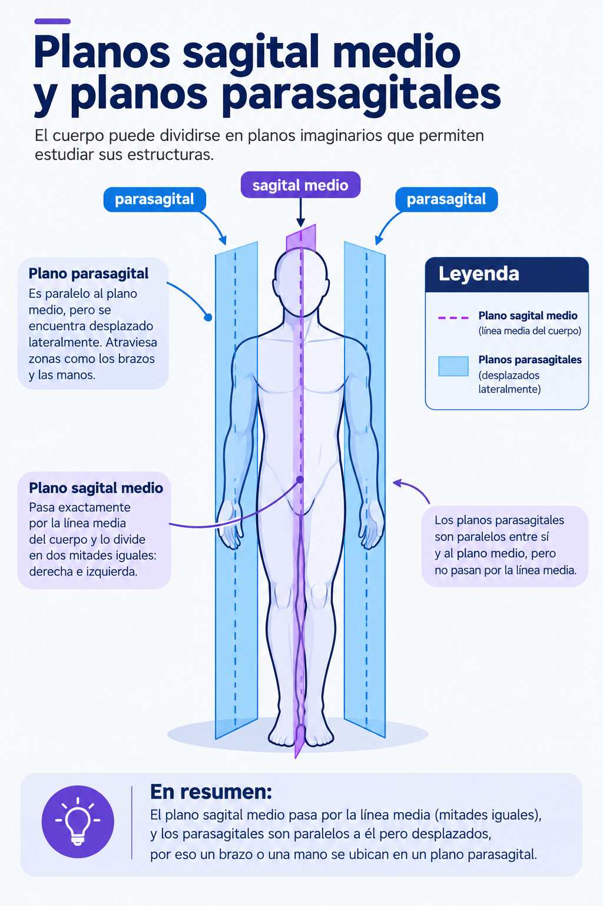

Texto
Los planos anatómicos son superficies imaginarias que dividen el cuerpo para describir la ubicación de sus estructuras y sus movimientos:
Plano sagital: divide el cuerpo en una mitad derecha y una izquierda. 
Plano frontal o coronal: divide el cuerpo en una mitad anterior (ventral) y una posterior (dorsal).
Plano transversal u horizontal: divide el cuerpo en una mitad superior y una inferior.
imagen 2. Plano Sagital
Nota. Tomado de "3 planos y ejes de movimiento," por J. Fernández, 2026, Mundo Entrenamiento.
Se relaciona principalmente con movimientos hacia adelante y hacia atrás, como flexionar y extender una pierna o un brazo
imagen 3. Plano Frontal

Nota. Tomado de "3 planos y ejes de movimiento," por J. Fernández, 2026, Mundo Entrenamiento.
En este plano se realizan movimientos hacia los lados, como separar y acercar los brazos o las piernas al cuerpo.
imagen 4. Plano Transversal

Nota. Tomado de "3 planos y ejes de movimiento," por J. Fernández, 2026, Mundo Entrenamiento.
Está relacionado con los movimientos de giro o rotación , como cuando giramos el tronco para golpear una pelota.
Imagen 5. Planos Sagital Medio y Planos Parasagitales

Nota. Elaboración propia mediante inteligencia artificial, OpenAI (2026), ChatGPT (DALL·E).